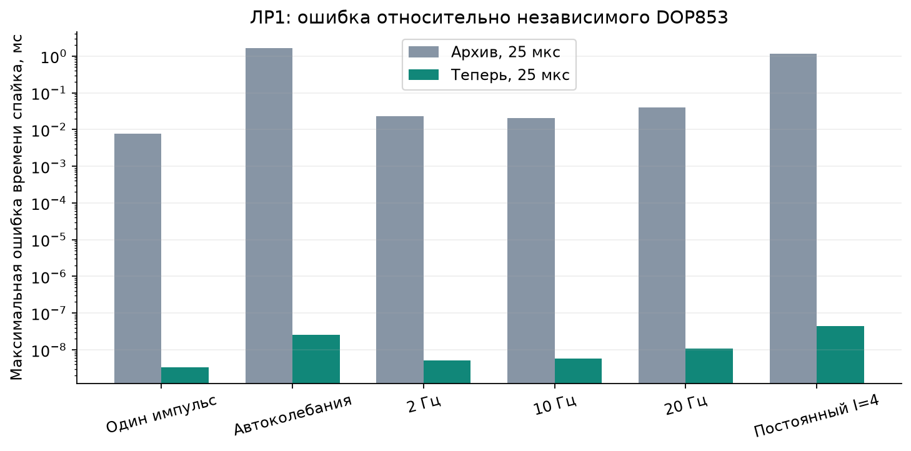
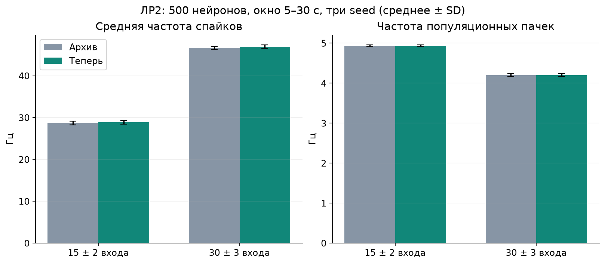
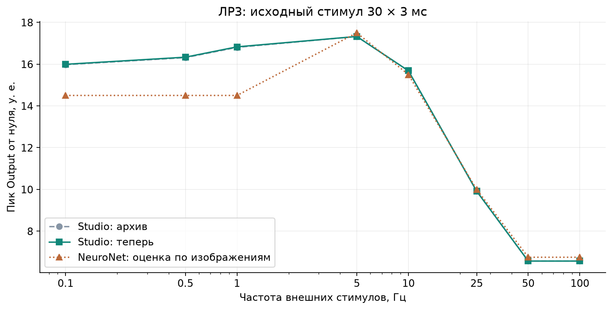
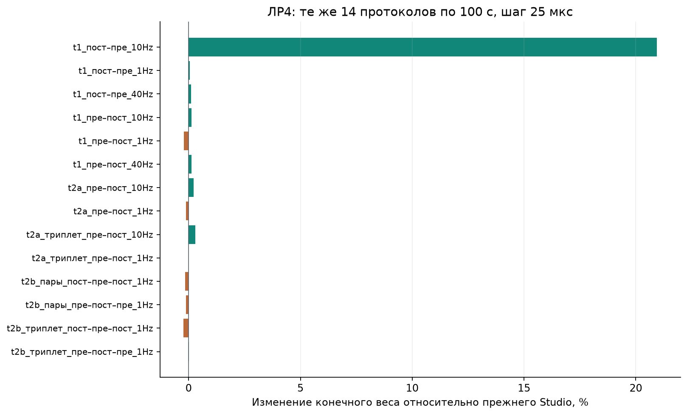

Серия начата 13 октября 2026 · отчёт сформирован 2026-10-14T03:48:26+03:00 · Network Studio · исходный коммит d8ddfcb88c9d66d387c9dd88c9888809f223b502 · ветка audit/labs-1-4-20261013
Результаты после исправления интегратора изменились численно. Ниже отдельно сравниваются прежние расчёты Studio, новая сборка на тех же входах и наблюдения NeuroNet из прежних отчётов. Нулевая задержка сохранена во всех архивных опытах; параметры под внешние ответы не подбирались.
Завершены 282 основных расчёта: архивные сценарии и контроли, включая три полных опыта сети 500 нейронов из ЛР3, длинные популяционные опыты ЛР2 и два расчёта для сравнения исполнителей. Дополнительно выполнены 16 расчётов при третьем шаге, свежий независимый DOP853 для семи режимов ЛР1, сравнения GUI/CLI и предыдущей сборки. ЛР4 здесь — четвёртая выполненная работа; в методичке и каталоге reproducibility/lab5 это ЛР5 (STDP).
Штатная команда powershell -ExecutionPolicy Bypass -File .\build.ps1 -Test -Smoke: 9/9 тестов, 906.15 с под параллельной нагрузкой. GUI: 28 кадров, семь вкладок, без ошибки Direct3D. Дополнительные четыре лабораторные конфигурации в GUI дают все семь экспортов побайтово равными CLI.
В шести лабораторных контролях предыдущая сборка checkpoint/resume и текущая сборка с задержками дают побайтово одинаковые события, состояния и веса (18 CSV). Это отделяет эффект ранее исправленного интегратора от добавления очереди задержек при delay=0. Новые поля журналов/схем не сравниваются как старые данные.
| Серия | Завершено | Одинаковое число спайков по всем нейронам | Идентичные старые CSV |
|---|---|---|---|
| lab1 | 45 | 43 | 7/90 |
| lab1_extra | 35 | 34 | 29/105 |
| lab2_bridge | 2 | 0 | 0/5 |
| lab2_imported | 2 | 0 | 0/4 |
| lab2_populations | 15 | 2 | 2/30 |
| lab2_ring11 | 2 | 0 | 0/6 |
| lab2_rings | 43 | 37 | 0/129 |
| lab3 | 17 | 17 | 0/51 |
| lab3_calibrated | 11 | 11 | 0/33 |
| lab3_network | 3 | 0 | 0/9 |
| lab3_network_convergence | 5 | 0 | 0/15 |
| lab4_duration | 30 | 13 | 0/90 |
| lab4_paths | 36 | 27 | 3/108 |
| lab4_updated | 36 | 34 | 0/108 |
Побайтовое различие CSV само по себе не означает дефект: изменились локализация событий, момент сброса и внутренние участки интегрирования. Большая точечная разность напряжений около сдвинутого спайка не является мерой ошибки фазы.
По согласованию с пользователем коэффициенты точных линейных переходов вычисляются один раз для одинаковых параметров, а корень порога ищется в независимой между событиями подсистеме нейрона. Прежний порядок суммирования входящих токов и оба полушага RK сохранены. Полное принятое состояние всё ещё вычисляет общий интегратор. При наличии астроцитов используется прежний полный поиск. Новые входящие списки являются производными данными и пересоздаются конструктором при восстановлении.
С сохранённой исходной сборкой выполнено 25 побайтовых контролей: CSV, счётчики и полное двоичное состояние checkpoint (кроме идентификатора сборки и зависящей от него контрольной суммы). Для двух активных популяций TM/экспоненциальных синапсов сравниваются события и счётчики всех 500 нейронов, а также траектории 16 выбранных узлов (предел штатного экспорта). Дополнительно 154 завершённых лабораторных повторов исходной сборки дали 770 идентичных CSV с ускоренной версией. Штатный регрессионный тест проверяет ускоренную и полную локализацию для HH/Ижикевича, трёх моделей синапса, трёх правил STDP, задержек и шума, без допуска на различие состояния.
| Контроль | До, с | После, с | Отношение |
|---|---|---|---|
| large_core | 50.77583 | 20.19045 | 2.5148438 |
| tm | 1.6810403 | 0.8900188 | 1.8887694 |
| tsodyks_markram_active | 339.15382 | 10.898595 | 31.119039 |
| exponential_current_active | 22.585968 | 7.3836838 | 3.0589024 |
Это замеры при параллельно запущенных проверках, а не универсальная оценка производительности. Шаги, допуски и порядок событий не изменены. Строгий идентификатор совместимости checkpoint обновился: старые файлы нужно открывать исходной сборкой; защита не обходилась.
Дополнительный стресс-контроль: при механической замене TM на экспоненциальную модель с прежним усилением 20 возникла лавина событий; запуск остановлен по длительности и не считается пройденным. Отдельный завершённый контроль экспоненциальной модели использует усиление 1. Это вспомогательные проверки оптимизации, не изменение архивных лабораторных протоколов.
Для сетей без астроцитов также исключены неиспользуемые линейные производные и повторные линейные переходы стадий RK. Нейронные стадии используют прежние выражения, а синаптические координаты получают те же точные значения: общий линейный результат используется для стадий 2/3 и для стадии 4/итоговой комбинации. Норма ошибки, полное состояние и адаптивные решения не меняются. Граница нелинейной части пересоздаётся конструктором и не является новым состоянием checkpoint. Эта версия повторно прошла все 25 побитовых контролей.
| Опыт | Спайки до → после | Частота по ISI до, Гц | После, Гц |
|---|---|---|---|
| 01_rest | 0 → 0 | — | — |
| 02_single_pulse | 1 → 1 | — | — |
| 03_autonomous | 48 → 48 | 9.4913167 | 9.4947222 |
| 04_periodic_02hz | 6 → 6 | 2 | 2.0000124 |
| 04_periodic_10hz | 30 → 30 | 9.9994828 | 9.9994753 |
| 04_periodic_20hz | 60 → 60 | 19.985434 | 19.985443 |
| 05_dc_4 | 36 → 36 | 7.1463074 | 7.1479245 |
| 02_reference_30x3ms | 2 → 2 | 597.01493 | 603.18351 |
Отдельно повторены сохранённые контроли с параметрами из пользовательского отчёта: постоянный уровень 3,8 и импульсы 30×3 мс. Автоколебательный контроль выше использует именно b=0,27.
| Контроль исходных параметров | Спайки до → после | Частота по ISI до, Гц | После, Гц |
|---|---|---|---|
| user_dc3p8_12p5us | 29 → 29 | 5.6170273 | 5.6174979 |
| user_pulse_2hz | 20 → 20 | 4.2836642 | 4.2836924 |
| 04_reference_10hz_30x3ms | 60 → 60 | 20.330806 | 20.331009 |
| user_pulse_20hz | 133 → 133 | 26.833745 | 26.833822 |
При 3,8 устойчивый ритм сохранился: 29 спайков в обоих расчётах. При импульсах 30×3 мс Studio по-прежнему может давать несколько спайков на стимул. Поэтому ответы с частотой стимулятора в исходном отчёте NeuroNet не следует объявлять точно воспроизведёнными на основании коротких односпайковых контролей.
Изменения количества событий в проверенных шумовых/дополнительных опытах:
| Опыт | До, по нейронам | После |
|---|---|---|
| noise_sigma5_seed42 | [54] | [55] |
| noise_sigma8_seed23 | [108] | [109] |
| noise_sigma5_seed42_12p5us | [54] | [55] |
Свежий независимый решатель DOP853: точные границы входа, терминальные корни порога и сброс состояния в момент события; миллисекунды, rtol=1e−11, atol=1e−12, max_step=0,5 мс. Максимальная ошибка времени спайка:
| Опыт | Архив 25 мкс, мс | Новый 25 мкс, мс | 12,5 мкс, мс | 6,25 мкс, мс |
|---|---|---|---|---|
| 01_rest | 0 | 0 | 0 | 0 |
| 02_single_pulse | 0.007571894 | 3.3401754e-09 | 7.8483053e-10 | 1.4609147e-10 |
| 03_autonomous | 1.6807914 | 2.5644376e-08 | 1.6092905e-08 | 6.4056316e-08 |
| 04_periodic_02hz | 0.023015735 | 5.2104987e-09 | 9.2548191e-10 | 1.8074431e-10 |
| 04_periodic_10hz | 0.020356895 | 5.7802652e-09 | 1.0724754e-09 | 1.7097435e-10 |
| 04_periodic_20hz | 0.040110581 | 1.0941914e-08 | 1.6820989e-09 | 1.5276669e-09 |
| 05_dc_4 | 1.1384234 | 4.4478199e-08 | 2.2369662e-08 | 6.1950445e-08 |

Количество событий совпало с DOP853 во всех семи режимах. На уровне порядка 10⁻⁷ мс и ниже таблица уже отражает погрешность эталона и округления; строгую монотонность последних цифр не следует трактовать как критерий сходимости.
| Шум σ | До: частота ± SD, Гц | После: частота ± SD, Гц |
|---|---|---|
| 4,0 | 2.266667 ± 0.352144 | 2.266667 ± 0.352144 |
| 4,5 | 3.511111 ± 0.323730 | 3.511111 ± 0.323730 |
Окно 1–10 с, два нейрона × пять seed. Это одна и та же реализация шума Studio; генератор NeuroNet неизвестен. Исходный импульс 30×3 мс по-прежнему может вызывать несколько спайков: он не эквивалентен подобранному стимулу 30×1 мс.
| Кольцо | Циркуляция до / после | Спайки до / после | Частота поздних ISI до / после |
|---|---|---|---|
| tm_n03_w1 | False / False | 3 / 3 | — / — |
| tm_n05_w1 | False / False | 5 / 5 | — / — |
| tm_n10_w1 | False / False | 10 / 10 | — / — |
| tm_n11_w1 | True / True | 937 / 938 | 17.353579 / 17.370337 |
| tm_n10_w0p7 | False / False | 10 / 10 | — / — |
| tm_n10_w0p5 | False / False | 1 / 1 | — / — |
| exp_n10_w0p7 | True / True | 994 / 995 | 20.191822 / 20.204258 |
Изменившиеся классификации циркуляции по прежнему критерию (не менее двух событий на каждом узле в 4–5 с, порядок ≥95%, последний спайк ≥4,9 с): нет. Наличие циркуляции в пятисекундном окне не доказывает её бесконечной устойчивости.
Расхождение с исходным отчётом NeuroNet сохраняется: там кольцо из 10 нейронов поддерживало активность при весах 1, 0,7 и 0,5; в исходной TM-модели Studio эти кольца затухают. Исправление численной схемы само по себе это различие моделей не устранило. Экспоненциальный синапс — отдельный контроль, а не доказанная реконструкция NeuroNet.
| Сеть | Спайки до, Гц | После, Гц | Пачки до, Гц | После, Гц |
|---|---|---|---|---|
| 15 входов | 28.726880 ± 0.441936 | 28.835467 ± 0.438955 | 4.933333 ± 0.023094 | 4.933333 ± 0.023094 |
| 30 входов | 46.645413 ± 0.386426 | 46.963973 ± 0.400896 | 4.200000 ± 0.040000 | 4.200000 ± 0.040000 |

Среднее ± SD по seed 11/42/101, окно 5–30 с, 500 нейронов, σ=3. Пачки определены прежним независимым алгоритмом (50-мс популяционная частота, максимум >5 Гц, расстояние пиков 50 мс). При изменении отдельных траекторий следует сравнивать и статистику, а не требовать совпадения каждого шумового спайка.
| Исходный граф NeuroNet | Частота до / после, Гц | Пачки до / после, Гц |
|---|---|---|
| nn_k15 | 20.882320 / 21.217680 | 5.320000 / 5.400000 |
| nn_k30 | 36.228720 / 36.650240 | 5.040000 / 5.080000 |
Два импортированных графа проверены отдельно от вновь сгенерированных популяций: в них фактически 5577 и 11891 связей. Номинальные подписи «15» и «30» не означают, что каждый нейрон имеет ровно такое число входов; это нельзя смешивать с контролями по сгенерированным графам.
Качественное наличие пачечной активности воспроизводится. Точное совпадение частоты пачек с NeuroNet не установлено: в ручном отчёте сохранены показания счётчика 29 и 32 к моменту 29 с, тогда как здесь частота рассчитана по журналам собственным явно заданным детектором в окне 5–30 с. Эти оценки нельзя считать одной и той же измерительной процедурой.
Контроль основного ядра GUI против агрегированного исполнителя: 500 нейронов, 0,2 с, 5624 спайков, количество по каждому нейрону совпало; max |Δt|=9.8111103e-12 с, max |ΔV|=1.1526527e-07 мВ. Длинные популяционные серии рассчитаны штатным агрегированным исполнителем, который не поддерживает ненулевые задержки.
| Стимулы, Гц | NeuroNet ≈ пик | Studio до | Studio после | Спайки/с до | После |
|---|---|---|---|---|---|
| 0.1 | 14.5 | 15.973381 | 15.992397 | 0.2 | 0.2 |
| 0.5 | 14.5 | 16.312148 | 16.333131 | 1 | 1 |
| 1 | 14.5 | 16.802734 | 16.827432 | 2 | 2 |
| 5 | 17.5 | 17.325312 | 17.325269 | 10 | 10 |
| 10 | 15.5 | 15.681712 | 15.681971 | 20 | 20 |
| 25 | 10 | 9.9163337 | 9.9163337 | 25 | 25 |
| 50 | 6.75 | 6.5669666 | 6.5669666 | 50 | 50 |
| 100 | 6.75 | 6.5669666 | 6.5669666 | 50 | 50 |

Пики рассчитаны аналитической TM-рекуррентностью по фактическим новым пресинаптическим событиям, включая остаточный хвост; максимальная ошибка записанных ресурсов u/x/y относительно независимого точного перехода — 2.179934e-11. Калиброванные односпайковые протоколы также повторены; их настройки не подбирались заново.
| Полная сеть, частота | Активных нейронов 10–30 с: до / после | Спайков в окне: до / после | Средняя частота до / после, Гц |
|---|---|---|---|
| network_net1_0p1Hz | 493 / 494 | 3244 / 4943 | 0.324400 / 0.494300 |
| network_net1_100Hz | 5 / 5 | 5000 / 5000 | 0.500000 / 0.500000 |
| network_net1_1Hz | 484 / 484 | 20940 / 20990 | 2.094000 / 2.099000 |
В исходном ручном опыте NeuroNet частоту меняли последовательно без сброса сети. Здесь повторены сохранённые протоколы Studio: отдельные запуски по 30 с с одинаковым начальным состоянием. Это позволяет сравнить версии Studio, но не воспроизводит событийную историю того непрерывного ручного сеанса.
Изменение полной сети при 0,1 Гц существенно: в окне 10–30 с число событий выросло с 3244 до 4943 (52.373613%). Поэтому оценка «изменились лишь последние цифры» для всей серии неверна. Отдельно проверен полный первый всплеск до 0,5 с при уменьшении шага; результат приведён ниже.
| Протокол, 100 с | NeuroNet | Studio до | После | Δw | Δw, % | Спайки пре/пост |
|---|---|---|---|---|---|---|
| t1_post_pre_10Hz | 8.03577e-05 | 0.00077503056 | 0.00093731689 | 0.00016228633 | 20.939346 | [1500, 1500] → [1500, 1500] |
| t1_post_pre_1Hz | 0.0157814 | 0.047295068 | 0.047323217 | 2.8148186e-05 | 0.059516112 | [200, 200] → [200, 200] |
| t1_post_pre_40Hz | 0.153155 | 0.10895632 | 0.10907567 | 0.0001193489 | 0.1095383 | [4001, 4001] → [4001, 4001] |
| t1_pre_post_10Hz | 0.999748 | 0.7673114 | 0.76824198 | 0.00093057192 | 0.12127696 | [1500, 1990] → [1500, 1996] |
| t1_pre_post_1Hz | 0.501333 | 0.23040331 | 0.22993276 | -0.00047054744 | -0.20422773 | [200, 200] → [200, 200] |
| t1_pre_post_40Hz | 0.335617 | 0.25528316 | 0.25562808 | 0.0003449172 | 0.13511161 | [4001, 4001] → [4001, 4001] |
| t2a_pre_post_10Hz | 0.5437 | 0.65655566 | 0.6580105 | 0.0014548468 | 0.22158773 | [1500, 1500] → [1500, 1500] |
| t2a_pre_post_1Hz | 0.147829 | 0.22575372 | 0.22547471 | -0.00027901022 | -0.12359053 | [200, 200] → [200, 200] |
| t2a_triplet_pre_post_10Hz | 0.459589 | 0.69462643 | 0.69677596 | 0.0021495306 | 0.30945131 | [1500, 1500] → [1500, 1500] |
| t2a_triplet_pre_post_1Hz | 0.119444 | 0.15628273 | 0.15628087 | -1.8639237e-06 | -0.0011926613 | [200, 200] → [200, 200] |
| t2b_pair_post_pre_post_1Hz | 0.141625 | 0.14513124 | 0.14489841 | -0.00023283184 | -0.16042848 | [200, 300] → [200, 300] |
| t2b_pair_pre_post_pre_1Hz | 0.1141 | 0.21496817 | 0.21472067 | -0.00024749401 | -0.11513054 | [300, 200] → [300, 200] |
| t2b_triplet_post_pre_post_1Hz | 0.1523 | 0.18050599 | 0.18009813 | -0.00040785784 | -0.22595252 | [200, 300] → [200, 300] |
| t2b_triplet_pre_post_pre_1Hz | 0.0887917 | 0.14757011 | 0.14760117 | 3.1056832e-05 | 0.021045475 | [300, 200] → [300, 200] |

При уменьшении текущего шага с 25 до 12,5 мкс число спайков совпало в 14 из 14 основных протоколов; максимальное изменение конечного веса — 4.0070502e-10.
Все веса независимо пересчитаны по полным журналам событий прямыми суммами прошлых спайков, без использования внутренних следов C++. Максимальное расхождение по всей записанной истории — 2.1306179e-11. Одновременные события не образуют взаимной пары; медленный постслед в триплетной LTP берётся до текущего спайка.
В протоколе «пост–пре, 10 Гц» относительное изменение заметно (20.939346%), но абсолютное составляет 0.00016228633. Качественный результат — сильная депрессия — сохраняется. Поэтому относительные изменения очень малых конечных весов нужно читать вместе с самими весами и абсолютной разностью.
Для этого же опыта прежний вес при уменьшении шага до 12,5 мкс составлял 0.0008754052642214. Новые значения при 25 / 12,5 / 6,25 мкс: 0.0009373168919924 / 0.0009373168941502 / 0.0009373168946015. Уточнение шага подтверждает устойчивость нового результата.
| Топология, 5 с | Связь | Средний вес до | После |
|---|---|---|---|
| two | S1 | 0.10083452 | 0.100829 |
| chain | S1 | 0.10083452 | 0.100829 |
| chain | S2 | 0.09999498 | 0.099994974 |
| shortcut | S1 | 0.10083452 | 0.100829 |
| shortcut | S2 | 0.10011818 | 0.10011805 |
| shortcut | S3 | 0.10144372 | 0.10139015 |
Сетевые протоколы повторены по десяти одинаковым seed; отдельно сохранены 30 проверок длительностей 6,1 и 12,525 с. Рост прямой связи сам по себе не подтверждает правило кратчайшего пути: нужно также устойчивое подавление обходного пути. Модель задержек NeuroNet не восстановлена.
| Опыт | Спайки 25 мкс | 12,5 мкс | 6,25 мкс | Первый вес: 25 / 12,5 / 6,25 |
|---|---|---|---|---|
| lab2_rings/tm_n03_w1 | [1, 1, 1] | [1, 1, 1] | [1, 1, 1] | 1 / 1 / 1 |
| lab2_rings/tm_n10_w1 | [1, 1, 1, 1, 1, 1, 1, 1, 1, 1] | [1, 1, 1, 1, 1, 1, 1, 1, 1, 1] | [1, 1, 1, 1, 1, 1, 1, 1, 1, 1] | 1 / 1 / 1 |
| lab2_rings/exp_n10_w0p7 | [100, 100, 100, 100, 100, 99, 99, 99, 99, 99] | [100, 100, 100, 100, 100, 99, 99, 99, 99, 99] | [100, 100, 100, 100, 100, 99, 99, 99, 99, 99] | 0.7 / 0.7 / 0.7 |
| lab3/f5 | [140, 139] | [140, 139] | [140, 139] | 1 / 1 / 1 |
| lab3/f100 | [702, 1] | [702, 1] | [702, 1] | 1 / 1 / 1 |
| lab4_updated/t1_pre_post_10Hz_dt25us | [1500, 1996] | [1500, 1996] | [1500, 1996] | 0.768241975124 / 0.768241974723 / 0.768241974633 |
| lab4_updated/t1_post_pre_10Hz_dt25us | [1500, 1500] | [1500, 1500] | [1500, 1500] | 0.000937316891992 / 0.00093731689415 / 0.000937316894601 |
| lab4_updated/t2a_triplet_pre_post_10Hz_dt25us | [1500, 1500] | [1500, 1500] | [1500, 1500] | 0.696775958951 / 0.696775958649 / 0.696775958583 |
| lab4_updated/t2b_triplet_pre_post_pre_1Hz_dt25us | [300, 200] | [300, 200] | [300, 200] | 0.147601170827 / 0.147601170853 / 0.147601170857 |
Отдельный контроль связанной сети из 500 нейронов, 0,2 с: сравнение с самым мелким шагом 1,5625 мкс. Это проверка внутренней сходимости, а не независимый эталон большой сети. RMS напряжения включает участки около спайков.
| Шаг, мкс | Спайков | Число по нейронам совпадает | max |Δt|, мс | RMS ΔV, мВ |
|---|---|---|---|---|
| 25 | 1082 | 1 | 1.5632423e-05 | 2.5669076e-06 |
| 12.5 | 1082 | 1 | 4.0258281e-06 | 6.0418489e-07 |
| 6.25 | 1082 | 1 | 2.4745242e-07 | 5.3867448e-08 |
| 3.125 | 1082 | 1 | 1.706183e-07 | 2.3748522e-08 |
| 1.5625 | 1082 | 1 | 0 | 0 |
Дополнительные два расчёта после обнаружения большого изменения при 0,1 Гц: весь первый сетевой всплеск, окно [0; 0,5) с. Базовый шаг взят из полного завершённого опыта; эталон этой таблицы — собственный расчёт при 6,25 мкс. В архиве первый всплеск содержал 1620 событий и заканчивался в 0,257525 с.
| Шаг, мкс | Спайков | Последний спайк, с | Число по нейронам совпадает | max |Δt|, мс | RMS ΔV, мВ |
|---|---|---|---|---|---|
| 25 | 2495 | 0.36976582 | 1 | 0.01836837 | 0.00024177521 |
| 12.5 | 2495 | 0.36976592 | 1 | 0.0043078554 | 6.3969607e-05 |
| 6.25 | 2495 | 0.36976596 | 1 | 0 | 0 |
На всех трёх шагах получено 2495 спайков; количество совпадает отдельно для каждого нейрона. Удлинение первого всплеска относительно архива сохраняется при уточнении шага. Ошибка времени относительно 6,25 мкс уменьшается с 0,01837 до 0,004308 мс, RMS напряжения — с 0,0002418 до 0,00006397 мВ. Это существенный динамический эффект исправления событийной траектории, а не только новый формат времён в CSV.
Эти проверки охватывают первый всплеск. Полные 30-секундные сетевые траектории не повторялись на всех уменьшенных шагах и не сравнивались с независимым адаптивным решателем всей сети; ограничение не следует переносить на проверенные отдельные нейроны, TM-рекуррентности и пересчёт STDP.
Архивы и исходные пользовательские результаты не перезаписывались. Полные CSV и журналы находятся в verification\labs_1_4_20261014_compact; рядом с этим отчётом сохранены компактные JSON и скрипты. Длительные первые запуски исходной и промежуточной сборки остановлены при подготовке ускорения; их каталоги сохранены отдельно. В итоговую сводку входят только полностью завершённые запуски окончательной сборки. Начальный анализ ЛР1 был исправлен: в старом архиве нет отдельного CSV весов. Успешные нативные расчёты повторно разобраны без подмены данных; это ошибка обвязки сравнения, не сбой симулятора.
Исторический локальный lab3/compare.py содержит маркеры конфликта; он не исполнялся и не изменялся. Протоколы взяты из сохранённых JSON, TM проверена отдельным lab3/reference_tm.py. Для повторения нужен полный локальный архив, а также Python с NumPy/SciPy/Matplotlib; одного клона Git недостаточно для старых больших CSV.
Прохождение программных и численных проверок не доказывает биологическую достоверность. Сравнение с NeuroNet ограничено неизвестными соглашениями проведения, шума, интегратора, стартового состояния и продолжительностью ручных сеансов. В этих повторах новые задержки намеренно равны нулю; произвольное добавление задержек изменило бы эксперимент.
powershell -ExecutionPolicy Bypass -File .\build.ps1 -Test -Smoke python -B reproducibility/recheck_20261013/replay.py --output verification/labs_new --workers 4 python -B reproducibility/recheck_20261013/extras.py --output verification/labs_new python -B reproducibility/recheck_20261013/bridge.py --output verification/labs_new python -B reproducibility/recheck_20261013/independent.py --output verification/labs_new python -B reproducibility/recheck_20261013/interface_controls.py --output verification/labs_new python -B reproducibility/recheck_20261013/analyze.py --output verification/labs_new
При ведении журнала Windows временно запретила атомарную замену вспомогательного progress.json (WinError 5). Диспетчер закончил ожидание уже запущенных работ и сообщил эту ошибку; все 241 нативных расчёта основной очереди независимо завершились с кодом 0 и полными записями. Счётчик восстановлен после повторной проверки входов и всех хэшей выходных файлов, без перезапуска симуляций. Исходный журнал сохранён; в Python-обвязку добавлен ограниченный повтор атомарного переименования. Отдельная итоговая проверка охватывает все 282 основных расчёта.
| Новая сборка | SHA-256 |
|---|---|
| E:\asp\26_27\configurator\build\Release\network_studio.exe | 48f0f10a394b6ff09063f4ed471ca98dd5c9a3bcc3f4279ce3fc5853091aece3 |
| E:\asp\26_27\configurator\build\Release\network_studio_cli.exe | 48e4d8d345324ddf9b4d57d1f9723dff86c56159e0348a5b6a1be6d6f590ab41 |
| E:\asp\26_27\configurator\build\Release\network_studio_population.exe | c88003f2efad643d386b2fccc91465447a9a40cf1135b548f8074913acdbaf2f |
Среда проверки: os Windows-11-10.0.26100-SP0; python 3.12.14; numpy 2.5.3; scipy 1.18.1; matplotlib 3.11.2; compiler MSVC; compiler_version 19.44.35217.0.
Полные сравнительные метрики · Независимый эталон и третий шаг · Манифест